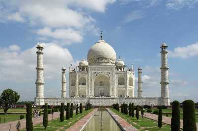
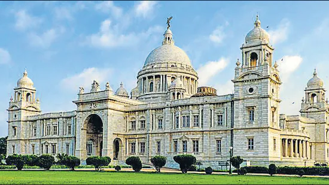
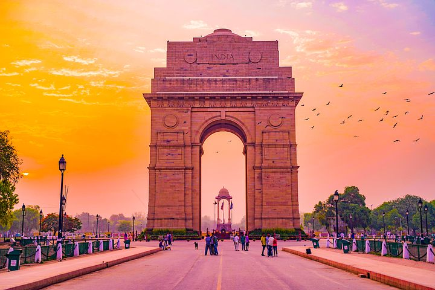
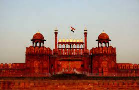

TAJ MAHAL
An immense mausoleum of white marble, built in Agra between
1631 and 1648 by order of the Mughal emperor Shah Jahan in
memory of his favourite wife, the Taj Mahal is the jewel of Muslim
art in India and one of the universally admired masterpieces of
the world's heritage.
QUTUB MINAR

Qutub Minar is one of the highest minarets in India with a height
of 73 metres. It is a UNESCO World Heritage Site and the tallest
brick minaret in the world.
HAWA MAHAL

Hawa Mahal is famous because of its amazing and unique
architecture. 953 windows or jharokhas are beautifully incorporated
in the honeycomb design of this palace
VICTORIA MEMORIAL

Dedicated to Queen Victoria of England, it was constructed between
1906 and 1921 by the then Prince of Wales (who went on to become
King George V). Today, the memorial has been turned into a museum
that has 25 galleries.
INDIA GATE
The Imperial War Graves Commission (now called Commonwealth
War Graves Commission) was established in 1917 as an organization responsible for burying and commemorating First World War dead
and missing soldiers.
RED FORT
Built by Mughal emperor Shah Jahan as the palace fort of his capital Shahjahanabad, the Red Fort is famous for its massive enclosing walls. ... The fort's construction was completed over a span of ten years, between 1638 and 1648